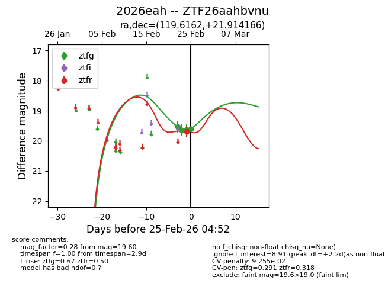
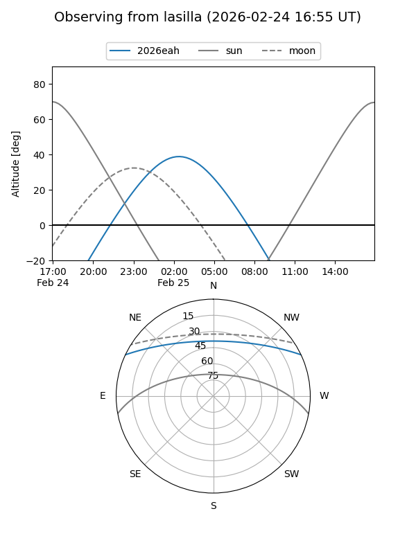
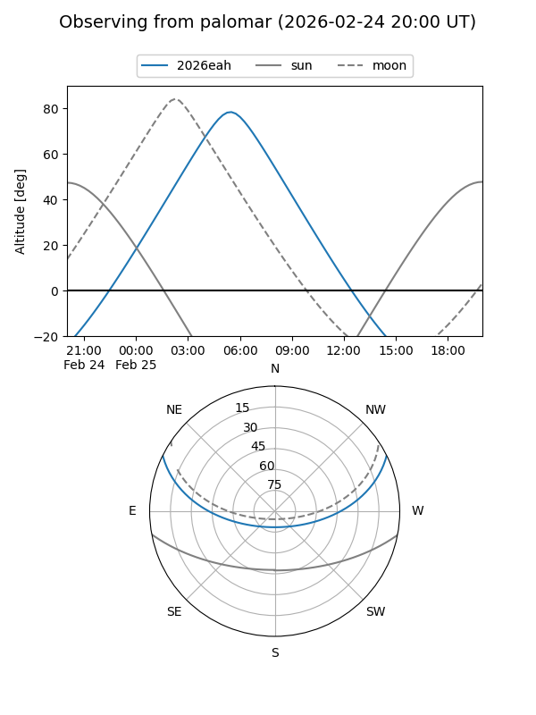
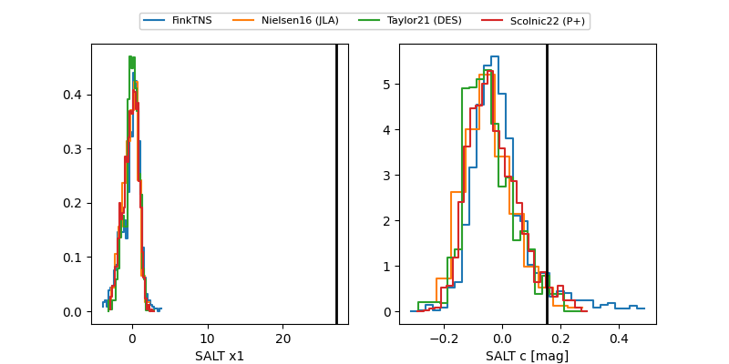

2026eah
Target 2026eah at 2026-02-25 04:53
Aliases and brokers:
FINK: link
Lasair: link
ALeRCE: link
TNS: link
YSE: link
alt names
ZTF26aahbvnu (ztf,fink_ztf)
2026eah (tns,yse)
Coordinates:
equatorial (ra, dec) = 119.6162,+21.91417
equatorial (HMS+DMS) = 07:58:27.89,+21:54:51.00
galactic (l, b) = (199.6199,+24.09383)
Flags:
likely cv
Photometry:
last ztfg=19.60, ztfr=19.68
4 ztfg, 1 ztfr detections
Lightcurve

Visibility


Additional plots
